| Número |
Títol |
Descripció |
Imatge |
| 1 |
No Más |
Walter intenta afrontar les conseqüències de la mort de Jane i la destrucció del seu matrimoni amb Skyler. Jesse torna de rehabilitació amb una nova perspectiva sobre la vida, mentre el càrtel mexicà envia dos assassins cap a Albuquerque. |
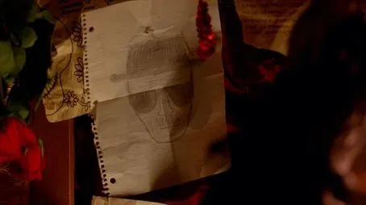 |
| 2 |
Caballo sin Nombre |
Walter intenta reconciliar-se amb Skyler, però ella descobreix la seva doble vida. Gus Fring ofereix a Walter una nova oportunitat per tornar a cuinar, i els assassins mexicans segueixen acostant-se. |
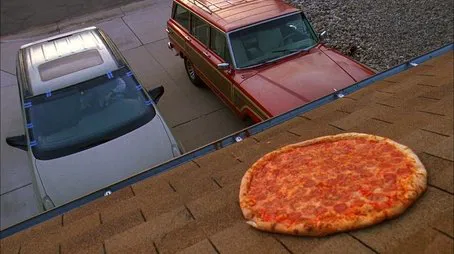 |
| 3 |
I.F.T. |
Skyler pren una decisió dràstica per allunyar-se de Walter. Gus continua pressionant-lo perquè torni a treballar per a ell, mentre Hank intensifica la seva investigació sobre la metanfetamina blava. |
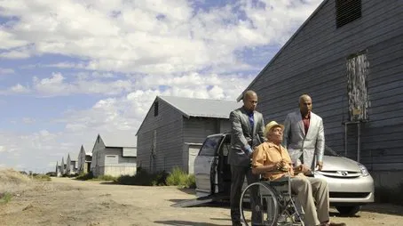 |
| 4 |
Green Light |
Walter es veu humiliat a la feina i busca reafirmar-se tornant a la cuina. Jesse intenta demostrar que pot fabricar una bona metanfetamina sense ell, però no tot surt com esperava. |
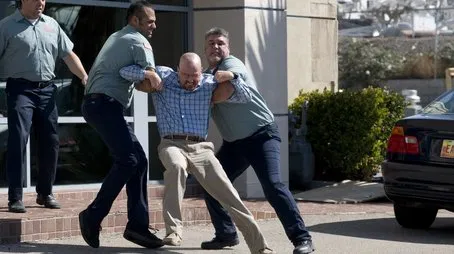 |
| 5 |
Más |
Gus aconsegueix convèncer Walter de tornar al negoci oferint-li un laboratori completament nou. Jesse intenta reprendre la seva vida però no pot escapar del passat. |
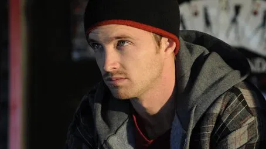 |
| 6 |
Sunset |
Hank s’acosta cada cop més a descobrir la veritat sobre Heisenberg, mentre Walter i Jesse es troben en perill imminent. La tensió augmenta al nou laboratori. |
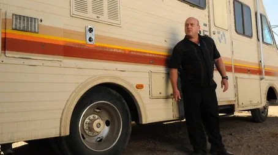 |
| 7 |
One Minute |
Després d’una discussió amb Hank, Jesse acaba hospitalitzat. Els assassins mexicans reben ordres inesperades que canvien el seu objectiu, i la situació es torna explosiva. |
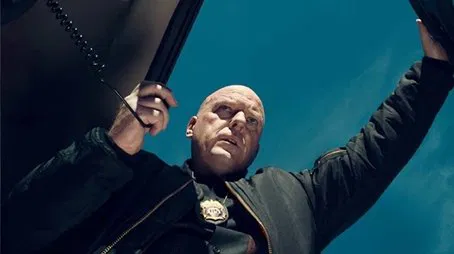 |
| 8 |
I See You |
Hank es recupera a l’hospital després de ser atacat, mentre Gus aprofita la situació per guanyar-se la confiança de la família White. Walter comença a comprendre el poder real del seu nou soci. |
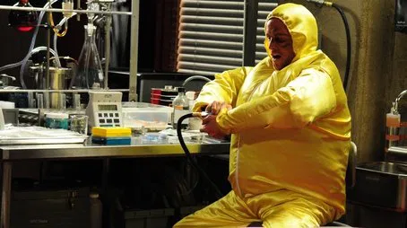 |
| 9 |
Kafkaesque |
Walter i Jesse s’acostumen a la rutina dins del laboratori de Gus. Skyler proposa una excusa per justificar els ingressos de Walter. Hank continua la seva recuperació mentre planeja la seva revenja. |
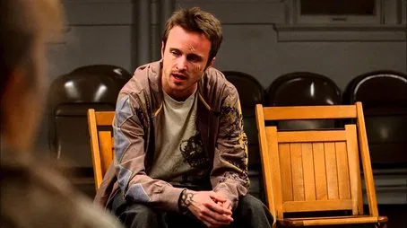 |
| 10 |
Fly |
Walter es torna obsessiu amb una mosca dins del laboratori, utilitzant-ho com a metàfora del seu sentiment de culpa. Jesse intenta mantenir-lo centrat mentre la paranoia creix. |
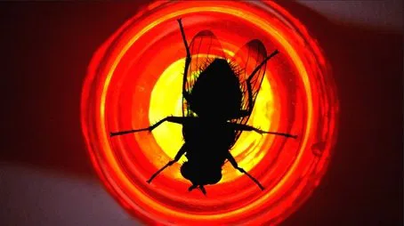 |
| 11 |
Abiquiu |
Skyler i Walter comencen a col·laborar en el negoci. Jesse reprèn contacte amb Andrea, una mare soltera amb connexions inesperades amb el món de la droga. |
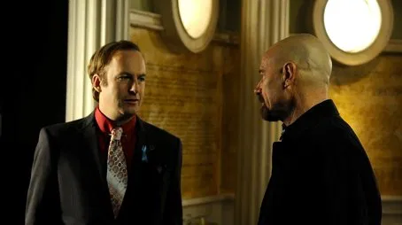 |
| 12 |
Half Measures |
Jesse pren una decisió perillosa després de descobrir la implicació de dos traficants en la mort d’un nen. Walter es veu obligat a intervenir de manera extrema. |
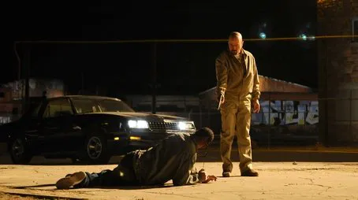 |
| 13 |
Full Measure |
Després de les accions extremes de Walter, Gus respon amb una decisió dràstica. Jesse i Walter es veuen atrapats en una situació que canviarà per sempre la seva relació i el seu futur. |
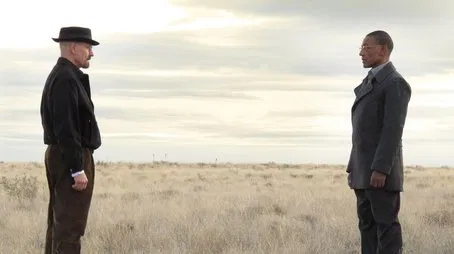 |